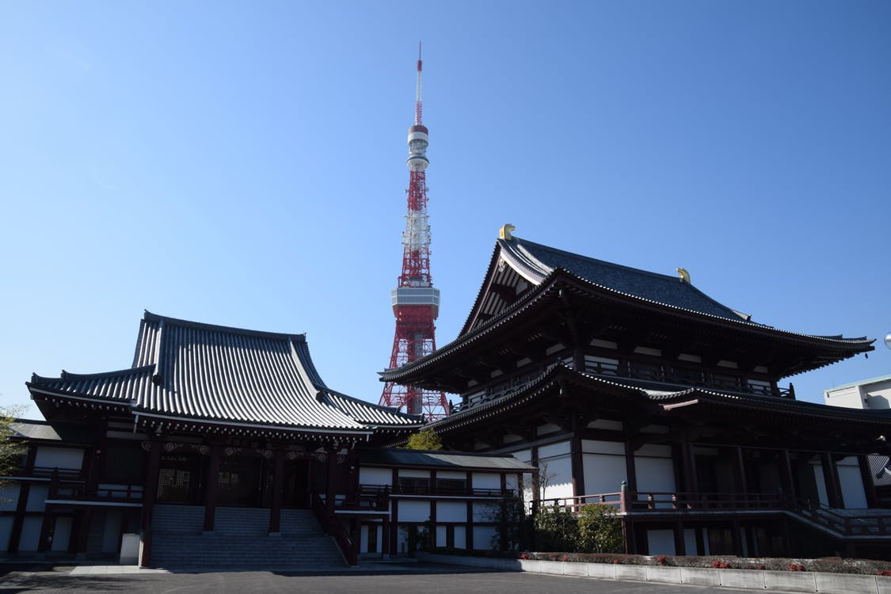

Why should YOU consider Tokyo as a travel destination?

Although it may be thousands of miles from the States, Tokyo should be on everyone's travel bucket list! Not only is it rich with plenty of food options throughout the city (Hello seafood!), it is a city that is spilling over with culture and history.
Tokyo is a city that mixes the old with the new, tradition and modernity. In one city, a tourist could visit temples and shrines while also visiting the second Disney World to be built outside of the States. In the midst of the city's hustle and bustle, there are places where one can escape to find peace and serenity similar to that of NYC (i.e. Central Park or the New York Botanical Garden, to name a few).
You may be skeptical about the cost of flying to Tokyo however as more and more airlines from the States provide direct and connecting flights to and from the city, you can find an inexpensive flight to Tokyo if you book it well in advance. Travel websites and phone apps that track flights are great tools a traveler can use to book a cheap round trip flight to and from Tokyo.

Click on the menu bar at the top of the page to check out the other sections of this site to receive more information about Tokyo: its food, history, culture and landmarks.